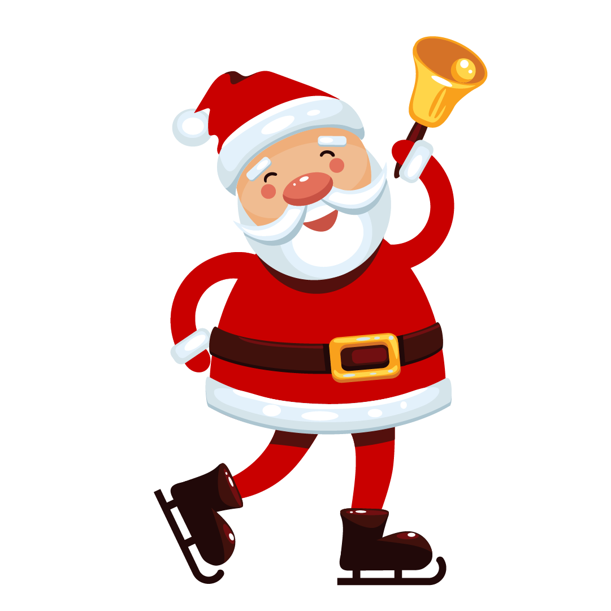
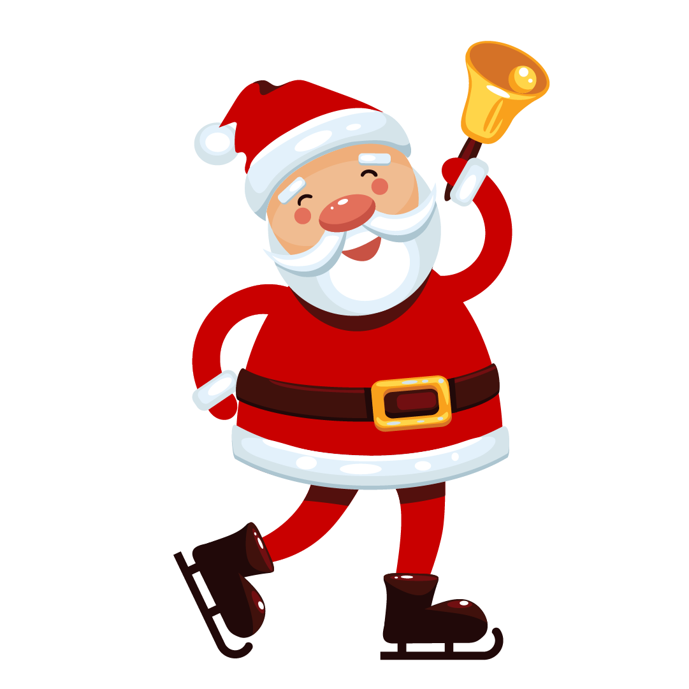

A Operação Natal é um projeto de
extensão formado por alunos da USP - São Carlos e da Universidade
Federal de São Carlos - UFSCar com o objetivo de desenvolver atividades
sociais na cidade de São Carlos, SP, especialmente no segundo semestre de
cada ano.
Dentre as atividades desenvolvidas pelo grupo estão:
- -
visitas às instituições ajudadas para realizar atividades com
os assistidos,
- -
dias de arrecadação em que os alunos se di spõem na porta de
mercados para angariar donativos,
- -
arrecadação de roupas para doação no evento chamado
Operação Loja Solidária,
- -
campanhas de doação de sangue,
- -
conscientização em escolas da cidade,
- -
revitalizações,
- -
entre outras diversas atividades que visam o auxílio da
comunidade.
Além do citado acima, o projeto possui seu principal movimento, o
Dia D, que ocorre ao final do segundo semestre do ano. Nesse dia, membros e
voluntários do projeto se espalham por inúmeros bairros da cidade para
passar de porta em porta pedindo doações. Por fim, também
são feitos kits de presentes para cada assistido das
instituições ajudadas, a serem entregues próximas a dezembro em
eventos preparados para isso. Esses kits contêm roupas,
calçado, guloseima, produtos de higiene e um item a mais, variante conforme
a idade de quem irá recebê-lo.
Com todo esse trabalho, em 2019 a Operação Natal arrecadou
mais de 26 toneladas de donativos, variantes entre itens de limpeza, higiene e
alimentos, impactando diretamente mais de 5800 pessoas em 28 instituições.
Neste ano, visando manter o alto alcance e fundamental auxilio que oferece, foi aberto
esse canal de doação para que você também possa fazer parte
dessa história, ajudando na construção desse enorme impacto. Os
recursos aqui arrecadados serão destinados para a comprar de itens faltantes nos
kits e de itens necessários às instituições
ajudadas!
Confira um
pouco da nossa edição 2019!

.png) 

.png)
.png)